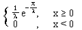

Verovatnoca i statistika
okt. '95.
.
1. Osam fudbalskih ekipa, medju kojima su i ekipe P i Z, takmici se po kup sistemu (formiraju se parovi ekipa, ekipe jednog para igraju medjusobno utakmicu i jedino pobednik nastavlja takmicenje). Verovatnoca pobede bilo koje ekipe protiv bilo kog protivnika je 0.5, a rezultati razlicitih utakmica su nezavisni.
a) Odrediti verovatnocu dogadjaja da ce ekipe P i Z odigrati medjusobno finalnu utakmicu.
b) Odrediti verovatnocu dogadjaja da ce ekipe P i Z odigrati medjusobno utakmicu tokom takmicenja.
2. Kocka za igru cije su strane numerisane brojevima: 1, 2, 3, 4, 5, i 6 baca se tri puta. Neka je X maksimum dobijenih brojeva.
a) Odrediti raspodelu verovatnoce slucajne velicine X.
b) Izracunati matematicko ocekivanje i disperziju slucajne velicine X.
3. Verovatnoca radjanja muskog deteta je 0.515. Odrediti verovatnocu dogadjaja da ce medju 10 000 novorodjene dece biti vise od 5000 decaka.
4. Obelezje X ima gustinu raspodele:
j(x) = gde je l >0.
Na osnovu uzorka (X1, X2, ..., Xn) odrediti ocenu maksimalne verodostojnosti nepoznatog parametra l i ispitati postojanost dobijene ocene.
5. Iz populacije na kojoj obelezje X ima normalnu raspodelu dobijen je sledeci uzorak: 215, 228, 204, 219, 225, 236, 222, 217, 229, 226, 218, 220, 193, 212, 240, 227, 220, 214, 221, 214. Na osnovu ovog uzorka odrediti 95%-ni dvostrani interval poverenja za nepoznatu disperziju raspodele obelezja.
6. Hipoteza H0 (p £ 1/100), gde je p verovatnoca proizvodnje neispravnog televizora, odbacuje se u korist alternative H1 (p > 1/100), ako se u uzorku od 20 televizora pronadju bar dva neispravna. Odrediti funkciju moci testa (tj. verovatnocu da ce nulta hipoteza biti odbacena kao funkcija argumenta p) i skicirati grafik te funkcije.